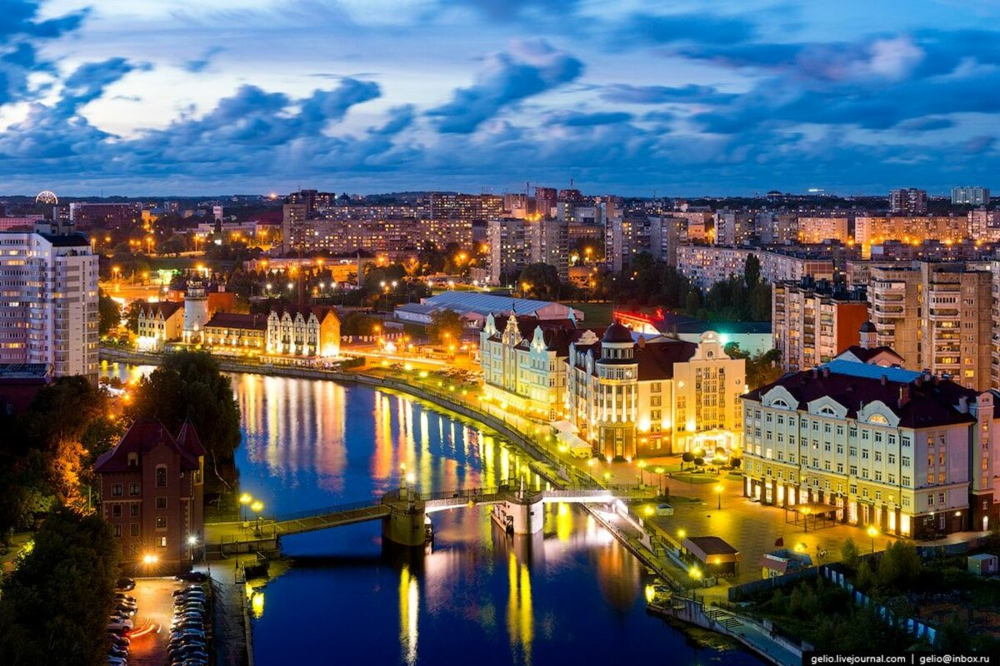

Калининград — город, где история, море и атмосфера почти европейского уюта сплелись в необычное сочетание. Расположенный между Польшей и Литвой, он хранит следы прусского прошлого, но при этом живёт яркой современной жизнью.
Тут можно подробней посмотреть на разные места: